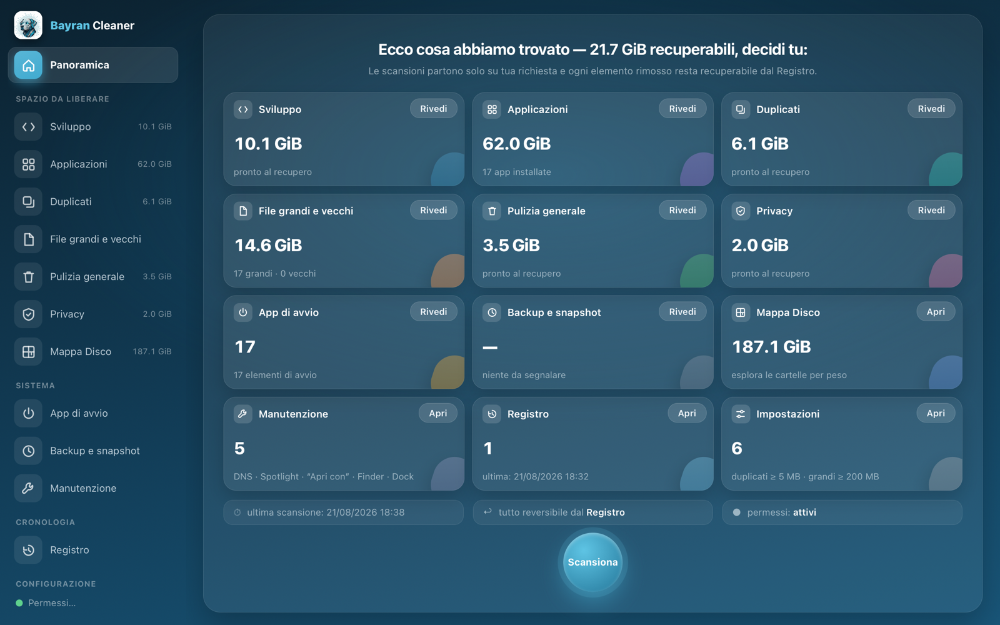

Bayran Cleaner
Libera spazio sul tuo Mac, senza trucchi.
Tutto nel Cestino, sempre reversibile — e i numeri che vedi sono quelli veri.
macOS 26 o successivo · Mac con chip Apple · 10 MB
Scarica gratis
Versione 3.4.8 · Gratuito

Scansiona
Otto sezioni analizzano il disco e ti mostrano cosa occupa spazio,
voce per voce.
Decidi tu
Niente rimozioni automatiche: ogni elemento va confermato,
e prima vedi l'elenco completo.
Sempre reversibile
Tutto finisce nel Cestino, annotato nel Registro:
ripristini qualsiasi cosa con un click.
Tutto quello che serve.
Niente che non serva.
Pulizia, manutenzione, monitoraggio e aggiornamenti: un solo strumento,
una promessa sola — ti mostriamo la verità e decidi tu.
🧹
Pulizia generale
Cache delle app, log, allegati di Mail, installer dimenticati, vecchi
aggiornamenti di iPhone, file .DS_Store: ogni voce spiega cosa fa e
quanto pesa.
📦
Applicazioni
Disinstallazione completa, dati nascosti inclusi, e residui delle app
già eliminate. E quando c'è un aggiornamento, lo scarica dal canale
ufficiale del produttore, ne verifica la firma e installa da solo —
con la barra di avanzamento e la versione precedente al sicuro nel
Cestino.
📈
Il Mac, in diretta
Chi sta usando processore e memoria, chi sta parlando con internet e
con quali server, come sta la batteria — aggiornato ogni due secondi.
E dal menu della barra, "Tieni sveglio il Mac" quando serve.
🗺️
Mappa Disco
Le cartelle ordinate per peso, esplorabili al clic, con misura
progressiva istantanea.
Una sola app.
Per tenere in ordine un Mac di solito servono quattro o
cinque strumenti diversi. Bayran Cleaner li sostituisce tutti.
🧹La pulizia in abbonamento
Scansione, disinstallazione, duplicati e file pesanti — senza
canone annuale e senza allarmi inventati.
🔧L'utility di manutenzione
Spotlight, anteprime, cache dei font, verifica del disco:
spiegate in italiano e sempre reversibili.
📊Il monitor di sistema
Processore, memoria, rete, batteria: nel menu della barra e in
tre schede dedicate, in tempo reale.
☕L'anti-stop
"Tieni sveglio il Mac" per 30 minuti, 2 ore o a oltranza —
revocabile con un click.
🔄E una cosa che non fa nessuno
Aggiorna le altre app da sola, verificando la firma del
produttore prima di installare.
Una sola app. Gratis. E non ti racconta storie.
Esplora tutte le sezioni
Ogni schermata qui sotto è l'app vera, con dati veri.
Scegli una scheda.
Il patto di onestà
Un programma di pulizia lavora sui tuoi file. Per questo
Bayran Cleaner segue regole fisse, senza eccezioni.
Tutto nel CestinoMai cancellazioni dirette:
ogni operazione è reversibile dal Registro integrato.
Decidi sempre tuNessuna rimozione automatica:
ogni voce va confermata, e vedi prima l'elenco completo.
Numeri veriLo spazio dichiarato è quello che
si libera davvero: cloni e collegamenti non vengono contati due volte.
Niente allarmismiSe i permessi mancano lo
diciamo; se non c'è nulla da pulire, lo diciamo. Nessuna "minaccia
trovata" a effetto.
Pronto a fare spazio?
Gratuito, firmato e verificato da Apple. Si aggiorna da solo.
Scarica gratis
Requisiti di sistema
- Sistema operativomacOS 26 o successivo
- ProcessoreMac con chip Apple
- Spazio su disco10 MB
- LinguaItaliano
Nessun cookie · Nessun tracciamento
- 0 cookie
- 0 localStorage · sessionStorage
- 0 analytics
- 0 richieste a terze parti